Nest
Background
How to help international students find their best suit apartment remotely?
In Ann Arbor, due to the integration and interdependence between the city and University of Michigan as well as the increasing quantity of international students, more and more new apartments are under construction to meet the ascending demand. However, there are a great many apartments with uneven quality offered for students to select and the number is roughly 1000 now in Ann Arbor.
International students or other students far away from US in no condition to visit and choose the apartment in person, can only access the information from websites and mobile applications.
Therefore, it is important for those platforms to offer an authentic, inclusive information, a well-performed inquiry system international students who are planning to move in.
Design Process
Iteration happens all the time
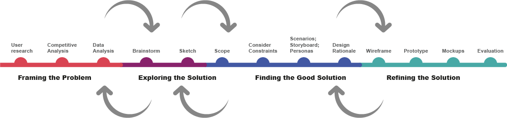Needfinding
Competitive Analysis
I tried to analyze and evaluate exsiting system based on rubrics and features I set as competitors. The systems include Apartments APP, Apartmentguide.com, Student.com, Apartmentlist APP. I found several shortcomings and also some highlights to refer.
Complete filters, but overwhelming and difficult to use.
Incomplete graphic information of rooms and environment of the apartment.
Combining with map API offers more complete information.
Incomplete or lacking roommate matching system.
Exploring
Brainstorm and Sketching
Based on the need found and data gathered before, I brainstormed several solutions and sketch them in a specific scenario.
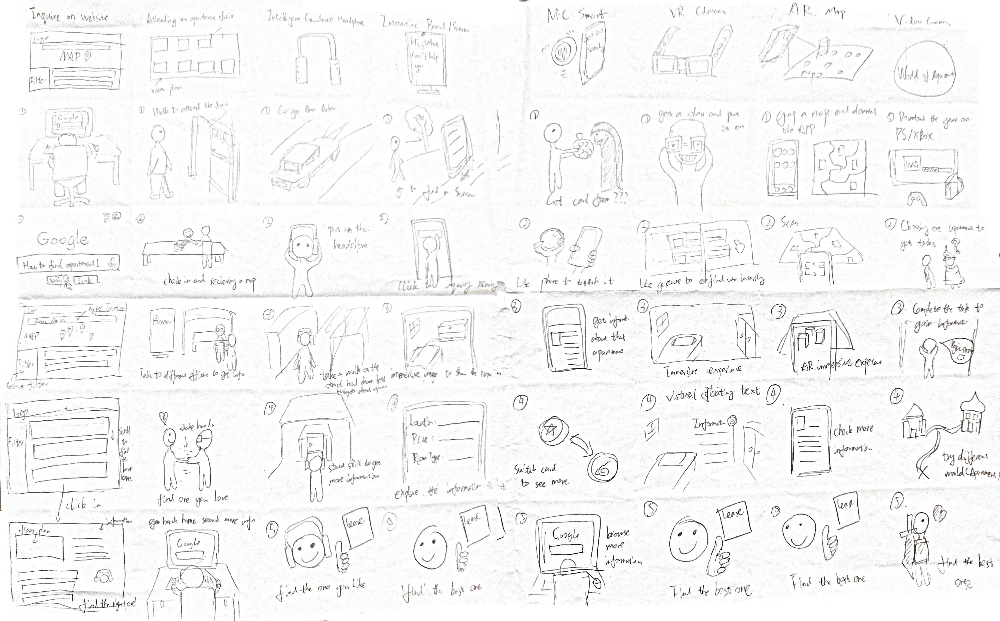Design Rationale
Wireframes are created for different critical feature approaches based on design rationale. And QOC (Question-Options-Criterial) is then used to evaluate all the approaches.
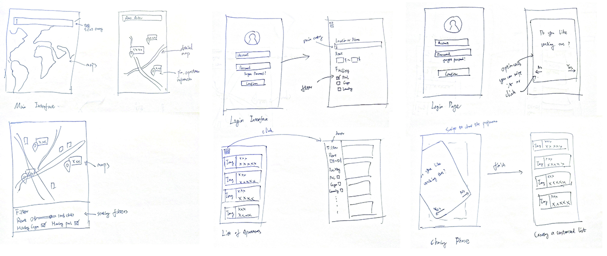
Wireframe
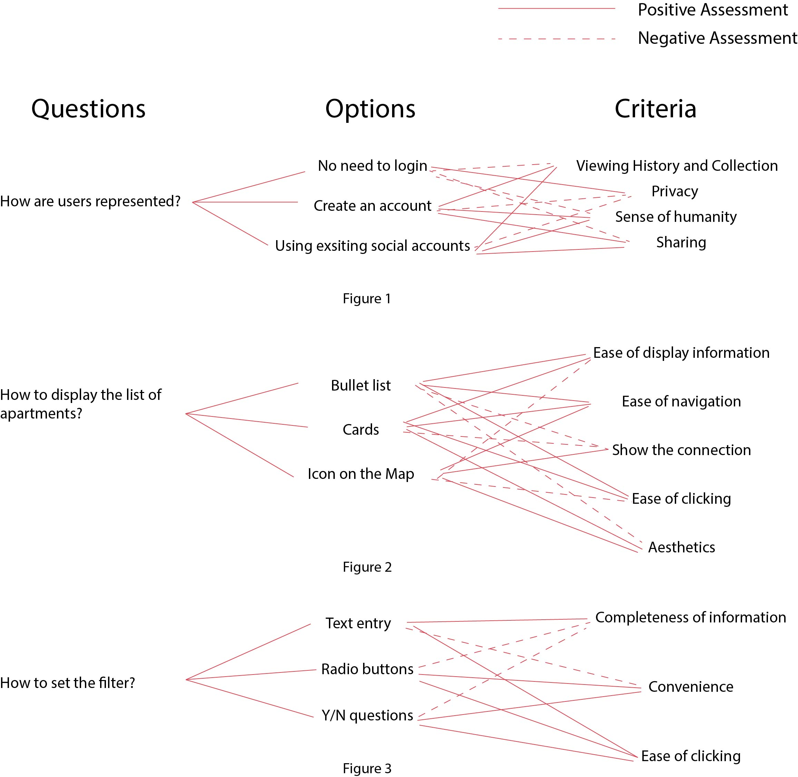
QOC
Prototyping
Paper Prototyping
In order to find the deficiency of the design, I created a paper prototype which is easier to modify the features for fast iteration.
Paper Prototyping Illustration
Digital Prototyping
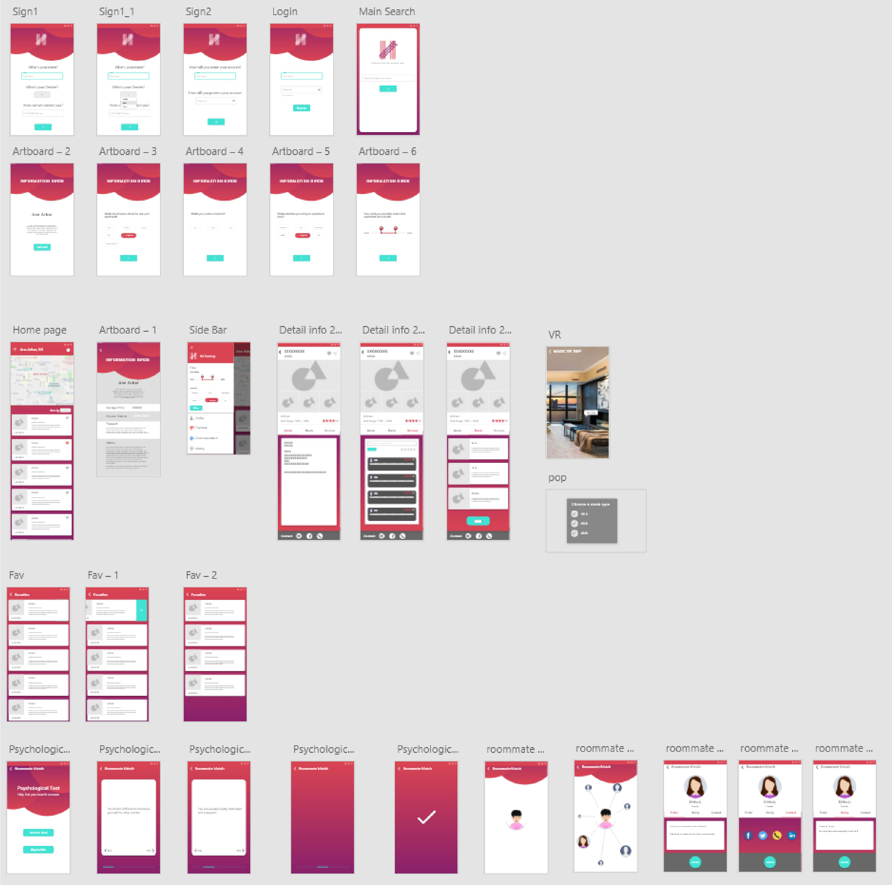
Screenshot in Adobe XD
Final Design
Nest
Help you find the warmest place.Style
Logo Design
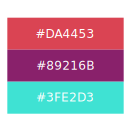
Color Palette
Platform
Walkthrough
Information Guide
The main goal is to get the best descriptive data for later recommendations from an introduction of the location and a set of questions.
The question is not like the typical filter, it is easier to answer with a more humanized tone. Besides, it is customized as the following questions change based on the former questions to best fit for a specific user.
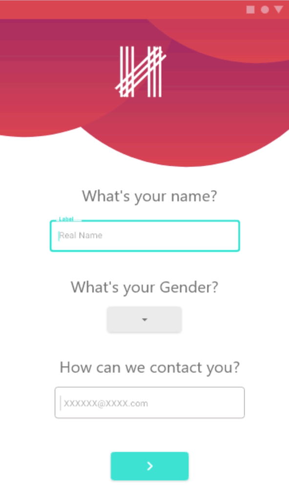
Signup & Login
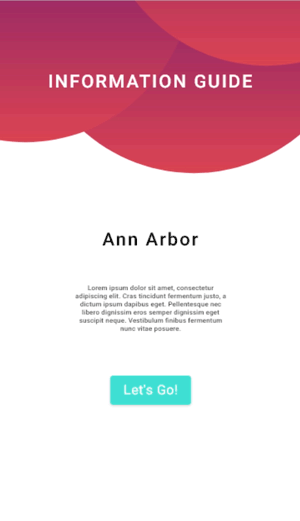
Information Guide
Apartment Browse
The main page is the card list of best fits apartments along with a map indicating the location.
There’s sidebar providing filters and portal to other functions.
Click on the card, you can see the detail info of apartments. Here I use VR to let users have more immersive experience and authentic understanding of the room.
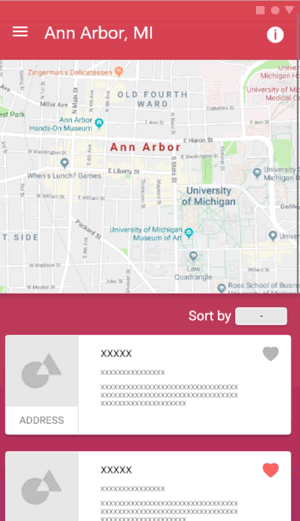
Main Page
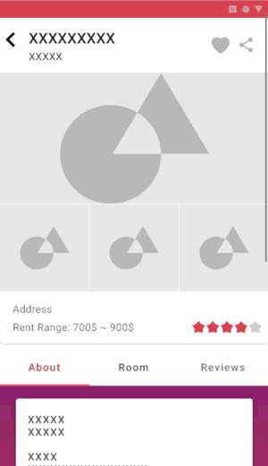
Detailed Info
Roommate Match
First is the psychological test which is to help find the basic match according to two users’ personality.
Second, you can choose to see several users’ information picked for you. Largest one is the one matches most. Then you can check their hobbies. Daily routines. To find the one matches you most and get contact with them.
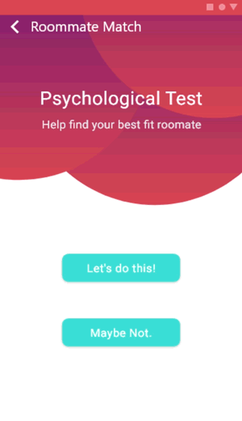
Psychological Test
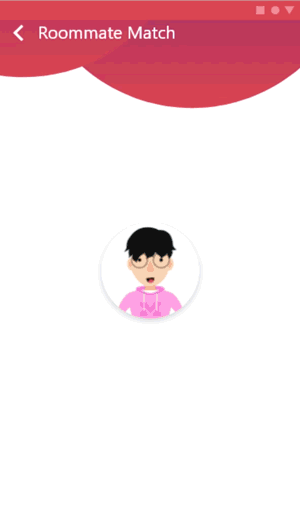
Detailed Info
Takeaway
Iterative Process of Design
During my first UX solo project, I performed a whole process of UX design of a product and gained a comprehensive understanding of each step. Iterations did happen all the time during my whole process as I found fast iterations really helpful when every process brought me a new perspective and new thoughts of my product.
“User is not like me.”
I find User testing is really helpful and relate to the reading “user is not like me”. You can always find out many issues you will never think about through the user testing. Originally my design is to offer a good inquiry system with complete filters and provide authentic information. When I was doing the user testing, my user tells me that if she knows nothing about the place, she don’t know how to start. I think about it and come up with the information guide which is later my key features.